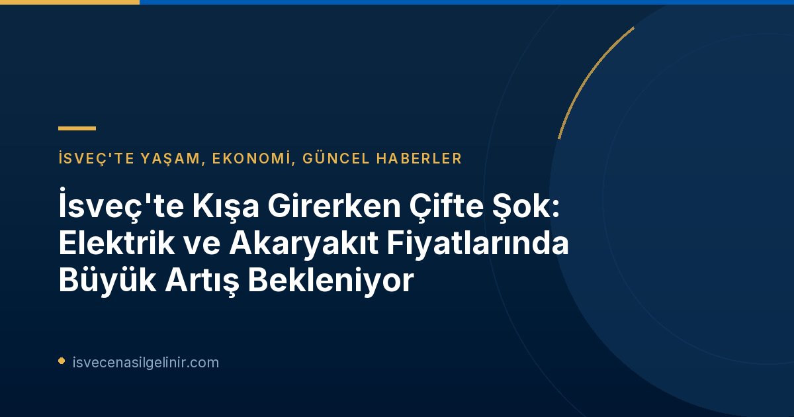

İsveç'te Yaşam, Ekonomi, Güncel Haberler
İsveç'te Kışa Girerken Çifte Şok: Elektrik ve Akaryakıt Fiyatlarında Büyük Artış Bekleniyor
İsveç'te yaşayanlar ve İsveç'e gelmeyi düşünenler için önemli bir ekonomik uyarı geldi. Uzmanlar, küresel gerilimlerin etkisiyle 2026 kışında İsveç'te elektrik ve akaryakıt fiyatlarında ciddi artışlar beklendiğini duyurdu. Özellikle ABD ve İran arasındaki jeopolitik gerilimin yol açtığı 'çifte şok' endişesiyle, hanehalkı bütçeleri üzerinde ek bir enflasyonist baskı oluşabileceği belirtiliyor. İsveç'teki ekonomik gelişmeleri takip etmek ve vatandaşlık süreçleri hakkında bilgi almak için İsveç Vatandaşlık Testi detaylarını inceleyebilirsiniz. Peki, bu artışlar ne anlama geliyor ve İsveç'te yaşayanları bu kış neler bekliyor?
Hemen İncele →